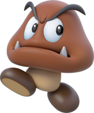

| Character |
Ranking |
Reason |
|
20 |
Considering that Spike's main form of attack is to spit a spiked ball or rod from his mouth and to throw it, its taste buds will likely be accustomed to metal. Whatever food that it cooks
will likely also taste of this. Yuck. |
|
19 |
This one is simple, its a kid. An intelligent kid, so you won't be served Play-Doh, but I do doubt his culinary abilities |
|
18 |
Being content to just eat fruit and cookies straight from the trees, I'd imagine that Yoshi would use simmilar unhygenic produce in his cooking. |
|
17 |
I just don't think that Koopa will be able to cook very well. And my opinion is fact. |
|
16 |
Daisy just won't have time to cook. She's no housewife, she's got a kingdom to run, horses to ride, tennis to play, footballs to kick, and baseballs to catch. There is no time for proper cooking, but simple tasteless meals may be doable |
|
15 |
A proffesional banana man, Donkey Kong has gone on whole adventures just to get some. However this leads to a severe lack of variety. |
|  |
14 |
While lacking in the arm department, his pure determination should allow it to cook some good meals for its friends despite this. Obviously a lack of arms will lead to the presentation being off and
certain tasks being impossible, his pure dedication to the art form despite that is worth something. |
|
13 |
Wario is known for a love of garlic, a food which is certainly great in moderation, and his state of being overweight shows that his food is certainly edible. But his food will have a surplus
of garlic in it to the point of being overpowering. Maybe if he learns to use other flavours, he will rank higher in the future. |
|
12 |
Toads just seem kinda competent at cooking. Not good enoungh to rank high, but enough to rank higher than those below. |
|
11 |
Well, lets be honest, he's gotta be able to cook if he is gonna be adventuring all the time. Granted, he won't have the greatest selection of ingredients adventuring, so his range is limited. |
|
10 |
Toadette seems more competent than Mario at cooking, but less than Luigi, you feel? |
|
9 |
With Daisy without the time to cook, and needing food, Luigi will likely have to cook some very hearty meals for the overactive princess. And even sometimes Mario, as he'd do anything for his big bro. |
|
8 |
Given Diddy Kongs propensity to fire peanuts out of a gun, I'd argue that he would likely use that complex ingredient when cooking, and is therefore likely to be a good cook. |
|
7 |
Princess of all space (apparently) has quite the array of lumas to feed back on her observatory, which in itself has a kitchen. I can only imagine what the introduction of star bits would do for her cooking. |
|
6 |
A clear man of the arts, Waluigi could do no wrong in the eyes of the internet. And I side with the internet, but only to an extent as I reckon he's a great cook, but that there is several better in and around the mushroom kingdom. |
|
5 |
When Bowser was young, Kamek was his sole provider of meals. I'd wager that a wizard/witch would be able to cook much better than the muggles (and space princesses) beneth him in the rankings. |
|
4 |
There is one Shy Guy amoungst the Shy Guys known as the Gormet Guy. He is a man of cuisine (obese) but only the finest. Someone has to make that cuisine, and I reckon its the Shy Guys. |
|
3 |
Being undead may mean that he has no need to eat food, being immortal presents another problem to Dry Bones, boredom. And what better activity to learn that cooking given that they are often
surrounded by lava, which could only add to the complex flavours this bone koopa could create. |
 |
2 |
Lets face the facts, bowser has got kids to feed. And he learnt to cook from one of the top ranked cooks on the list and consistently kidnaps another. If he isn't good at cooking, there is a problem.
Being able to breathe the fire to cook with also allows for BBQ style cooking anywhere. Either way Bowser is still a nutorious glutton with a love of roasted meats, so whats to say that he isn't the one cooking them. |
|
1 |
Considering that Peach is renouned for her cakes, it isn't much of a leap in logic to assume that she can likely cook well too given all the extra time and patience she has. Cooking would likely come naturally to the princess. |